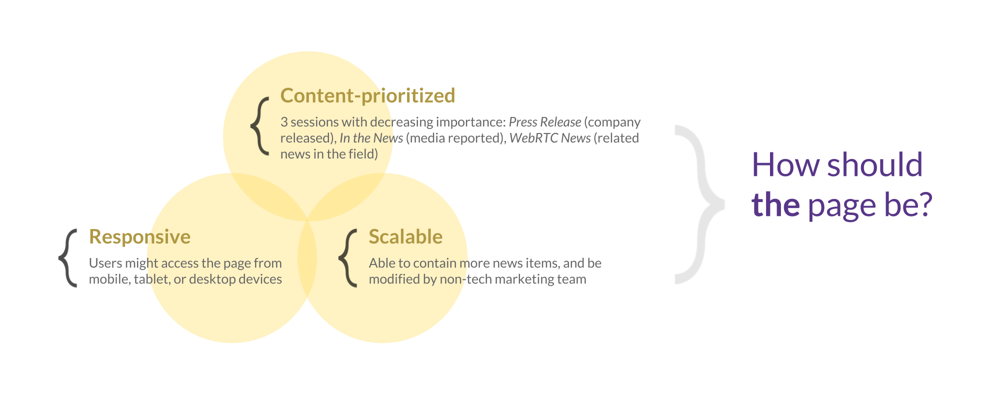
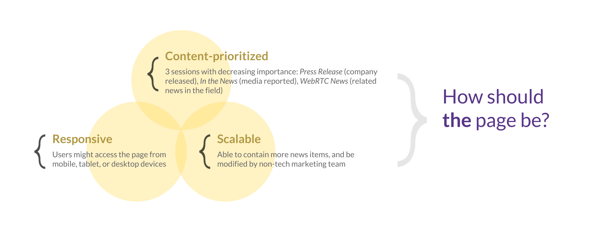

A paper-media-inspired webpage to collectively display the press coverage of a WebRTC company.
 


Independent work by me with marketing team in 1 week | July 2018
UI/UX designed with Figma, Zeplin and Photoshop
Project completed during the UI/UX design intern at callstats.io, a WebRTC startup based in Helsinki, Finland
Proto UIs are also on Behance